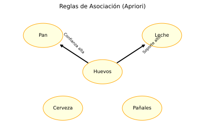

🛒 Unidad 8. Apriori - Reglas de Asociación
Apriori es un algoritmo clásico de minería de reglas de asociación utilizado para descubrir patrones frecuentes y relaciones entre ítems en grandes datasets transaccionales. Es famoso por su aplicación en el análisis de la cesta de la compra (Market Basket Analysis), donde se identifican qué productos suelen comprarse juntos. A diferencia de otros algoritmos de aprendizaje no supervisado, Apriori trabaja con datos transaccionales discretos.

8.1. ¿Qué son las Reglas de Asociación?
El Problema de la Cesta de la Compra
Imagina que tienes datos de transacciones de un supermercado:
| Transacción | Ítems Comprados |
|---|---|
| T1 | Pan, Leche, Mantequilla |
| T2 | Pan, Cerveza |
| T3 | Leche, Pañales, Cerveza |
| T4 | Pan, Leche, Pañales, Cerveza |
| T5 | Pan, Leche, Pañales |
Pregunta: ¿Qué productos tienden a comprarse juntos?
Una regla de asociación tiene la forma:
Por ejemplo: "Si un cliente compra Pan y Leche, es probable que también compre Mantequilla"
┌─────────────────────────────────────────────────────────────┐
│ REGLA DE ASOCIACIÓN │
├─────────────────────────────────────────────────────────────┤
│ │
│ {Pan, Leche} ──────────────→ {Mantequilla} │
│ │
│ ▲ ▲ │
│ │ │ │
│ Antecedente (LHS) Consecuente (RHS) │
│ "Si compra esto..." "...probablemente │
│ también compra esto" │
│ │
│ ─────────────────────────────────────────────────────────── │
│ │
│ Métricas de la regla: │
│ │
│ Support (Soporte): ¿Qué tan frecuente es {Pan,Leche}? │
│ Confidence (Confianza): ¿Con qué frecuencia se cumple? │
│ Lift: ¿Es la asociación significativa? │
│ │
└─────────────────────────────────────────────────────────────┘
8.2. Conceptos Fundamentales y Métricas
Itemset
Un itemset es un conjunto de ítems. Por ejemplo: {Pan, Leche, Mantequilla}
Un itemset frecuente es uno que aparece en al menos un número mínimo de transacciones.
Support (Soporte)
El soporte mide qué tan frecuente es un itemset en el dataset:
Para una regla \(A \rightarrow B\):
Ejemplo: Si {Pan, Leche} aparece en 3 de 5 transacciones: $\(Support(\{Pan, Leche\}) = \frac{3}{5} = 0.6 = 60\%\)$
Confidence (Confianza)
La confianza mide qué tan a menudo se cumple la regla cuando el antecedente está presente:
Ejemplo: Si {Pan} aparece en 4 transacciones y {Pan, Leche} en 3: $\(Confidence(\{Pan\} \rightarrow \{Leche\}) = \frac{3}{4} = 0.75 = 75\%\)$
Lift
El lift mide si la asociación es significativa o simplemente debida al azar:
Interpretación: - Lift > 1: A y B aparecen juntos más de lo esperado por azar → Asociación positiva - Lift = 1: A y B son independientes - Lift < 1: A y B aparecen juntos menos de lo esperado → Asociación negativa
Conviction
La conviction mide qué tan diferente es la regla de una asociación aleatoria:
Interpretación: - Conviction alto: La regla es muy útil - Conviction = 1: A y B son independientes - Conviction = ∞: La regla siempre se cumple
8.3. El Algoritmo Apriori
La Propiedad Apriori (Antimonotonía)
El algoritmo se basa en un principio clave:
"Si un itemset es infrecuente, todos sus superconjuntos también serán infrecuentes"
Esto permite podar el espacio de búsqueda eficientemente.
┌─────────────────────────────────────────────────────────────┐
│ PRINCIPIO APRIORI │
├─────────────────────────────────────────────────────────────┤
│ │
│ Si {A, B} es INFRECUENTE │
│ │
│ Entonces NO necesitamos verificar: │
│ - {A, B, C} │
│ - {A, B, D} │
│ - {A, B, C, D} │
│ - ... (todos los superconjuntos) │
│ │
│ ¡Esto ahorra muchísimo cómputo! │
│ │
└─────────────────────────────────────────────────────────────┘
Pasos del Algoritmo
- Paso 1: Encontrar todos los itemsets de tamaño 1 que cumplan min_support
- Paso 2: Generar candidatos de tamaño k+1 combinando itemsets frecuentes de tamaño k
- Paso 3: Podar candidatos que contengan subconjuntos infrecuentes
- Paso 4: Calcular soporte de candidatos restantes
- Paso 5: Repetir hasta que no haya más itemsets frecuentes
- Paso 6: Generar reglas de los itemsets frecuentes que cumplan min_confidence
8.4. Pros y Contras
| Ventajas | Desventajas |
|---|---|
| Fácil de entender e implementar: Algoritmo intuitivo | Puede ser lento: Múltiples escaneos del dataset |
| Interpretable: Las reglas son fáciles de explicar | Genera muchos candidatos: Especialmente con min_support bajo |
| Escalable con poda: La propiedad apriori reduce búsqueda | Requiere datos discretos: No funciona con datos continuos directamente |
| Ampliamente usado: Implementaciones optimizadas disponibles | Sensible a parámetros: min_support y min_confidence afectan mucho |
| Resultados accionables: Útil para decisiones de negocio | No captura contexto: Solo frecuencia, no causa-efecto |
8.5. Ejemplo Básico en Python
Este ejemplo usa la biblioteca mlxtend para implementar Apriori y reglas de asociación.
# ============================================================
# EJEMPLO BÁSICO: Apriori para análisis de cesta de compra
# ============================================================
# Importar bibliotecas necesarias
import pandas as pd # Manipulación de datos
import numpy as np # Operaciones numéricas
from mlxtend.preprocessing import TransactionEncoder # Codificar transacciones
from mlxtend.frequent_patterns import apriori, association_rules # Algoritmo Apriori
# -------------------------------------------------------------
# 1. CREAR DATASET DE TRANSACCIONES
# -------------------------------------------------------------
# Lista de transacciones (cada transacción es una lista de ítems)
transactions = [
['Pan', 'Leche', 'Mantequilla'],
['Pan', 'Cerveza'],
['Leche', 'Pañales', 'Cerveza'],
['Pan', 'Leche', 'Pañales', 'Cerveza'],
['Pan', 'Leche', 'Pañales'],
['Leche', 'Pañales', 'Cerveza'],
['Pan', 'Leche'],
['Pan', 'Cerveza', 'Pañales'],
['Pan', 'Leche', 'Cerveza', 'Pañales'],
['Leche', 'Mantequilla']
]
print("="*60)
print("APRIORI - ANÁLISIS DE CESTA DE LA COMPRA")
print("="*60)
print(f"\n--- Transacciones Originales ---")
for i, t in enumerate(transactions, 1):
print(f"T{i}: {t}")
print(f"\nTotal de transacciones: {len(transactions)}")
# -------------------------------------------------------------
# 2. PREPARAR DATOS PARA APRIORI
# -------------------------------------------------------------
# TransactionEncoder convierte listas a matriz binaria
te = TransactionEncoder()
te_array = te.fit_transform(transactions)
# Crear DataFrame con nombres de columnas (ítems)
df = pd.DataFrame(te_array, columns=te.columns_)
print(f"\n--- Matriz de Transacciones (One-Hot Encoded) ---")
print(df)
print(f"\nÍtems únicos: {list(te.columns_)}")
# -------------------------------------------------------------
# 3. ENCONTRAR ITEMSETS FRECUENTES
# -------------------------------------------------------------
print(f"\n--- Paso 1: Encontrar Itemsets Frecuentes ---")
# Aplicar algoritmo Apriori
# min_support: soporte mínimo (% de transacciones)
frequent_itemsets = apriori(
df,
min_support=0.3, # Itemset debe aparecer en al menos 30% de transacciones
use_colnames=True # Usar nombres de ítems en lugar de índices
)
# Ordenar por soporte
frequent_itemsets = frequent_itemsets.sort_values('support', ascending=False)
print(f"\nItemsets frecuentes (min_support=30%):")
print(frequent_itemsets.to_string(index=False))
print(f"\nTotal de itemsets frecuentes: {len(frequent_itemsets)}")
# -------------------------------------------------------------
# 4. GENERAR REGLAS DE ASOCIACIÓN
# -------------------------------------------------------------
print(f"\n--- Paso 2: Generar Reglas de Asociación ---")
# Generar reglas con confianza mínima
rules = association_rules(
frequent_itemsets,
metric='confidence', # Métrica para filtrar
min_threshold=0.5 # Confianza mínima del 50%
)
# Seleccionar columnas relevantes y ordenar
rules_display = rules[['antecedents', 'consequents', 'support',
'confidence', 'lift', 'conviction']]
rules_display = rules_display.sort_values('lift', ascending=False)
print(f"\nReglas de asociación (min_confidence=50%):")
print(rules_display.to_string(index=False))
print(f"\nTotal de reglas: {len(rules)}")
# -------------------------------------------------------------
# 5. INTERPRETAR REGLAS
# -------------------------------------------------------------
print(f"\n--- Interpretación de las Mejores Reglas ---")
# Top 3 reglas por Lift
top_rules = rules.nlargest(3, 'lift')
for idx, (_, rule) in enumerate(top_rules.iterrows(), 1):
ant = list(rule['antecedents'])
cons = list(rule['consequents'])
supp = rule['support']
conf = rule['confidence']
lift = rule['lift']
print(f"\n{idx}. {ant} → {cons}")
print(f" Soporte: {supp:.1%} (aparece en {supp*10:.0f}/10 transacciones)")
print(f" Confianza: {conf:.1%} (cuando se compra {ant}, {conf:.0%} compra {cons})")
print(f" Lift: {lift:.2f} ({lift:.2f}x más probable que por azar)")
# -------------------------------------------------------------
# 6. VISUALIZAR REGLAS
# -------------------------------------------------------------
import matplotlib.pyplot as plt
fig, axes = plt.subplots(1, 3, figsize=(15, 5))
# Scatter: Support vs Confidence, coloreado por Lift
scatter = axes[0].scatter(rules['support'], rules['confidence'],
c=rules['lift'], cmap='RdYlGn', s=100, alpha=0.7)
axes[0].set_xlabel('Support')
axes[0].set_ylabel('Confidence')
axes[0].set_title('Reglas: Support vs Confidence\n(color=Lift)')
plt.colorbar(scatter, ax=axes[0], label='Lift')
# Histograma de Lift
axes[1].hist(rules['lift'], bins=10, color='steelblue', edgecolor='black')
axes[1].axvline(x=1, color='red', linestyle='--', label='Lift=1 (independencia)')
axes[1].set_xlabel('Lift')
axes[1].set_ylabel('Frecuencia')
axes[1].set_title('Distribución del Lift')
axes[1].legend()
# Top 5 reglas por Lift
top_5 = rules.nlargest(5, 'lift')
labels = [f"{list(r['antecedents'])} → {list(r['consequents'])}"
for _, r in top_5.iterrows()]
labels = [l[:30] + '...' if len(l) > 30 else l for l in labels] # Truncar
axes[2].barh(labels, top_5['lift'], color='steelblue')
axes[2].axvline(x=1, color='red', linestyle='--', alpha=0.5)
axes[2].set_xlabel('Lift')
axes[2].set_title('Top 5 Reglas por Lift')
plt.tight_layout()
plt.show()
# -------------------------------------------------------------
# 7. FILTRAR REGLAS ÚTILES
# -------------------------------------------------------------
print(f"\n--- Reglas Recomendadas para el Negocio ---")
# Reglas con alto lift Y alta confianza
good_rules = rules[(rules['lift'] > 1.0) & (rules['confidence'] > 0.5)]
good_rules = good_rules.sort_values('lift', ascending=False)
print(f"\nReglas con Lift > 1 y Confidence > 50%:")
for _, rule in good_rules.head(5).iterrows():
ant = ', '.join(list(rule['antecedents']))
cons = ', '.join(list(rule['consequents']))
print(f" • Si compra [{ant}], es {rule['confidence']:.0%} probable que compre [{cons}]")
print(f" (Lift: {rule['lift']:.2f})")
print("""
Recomendaciones basadas en las reglas:
1. Colocar productos asociados cerca en el supermercado
2. Crear promociones de productos que se compran juntos
3. Recomendar productos complementarios en el checkout
""")
8.6. Ejemplo Avanzado: Dataset Real y Optimización
Este ejemplo trabaja con un dataset más grande y explora diferentes parámetros.
# ============================================================
# EJEMPLO AVANZADO: Apriori con dataset de retail
# ============================================================
import pandas as pd
import numpy as np
from mlxtend.preprocessing import TransactionEncoder
from mlxtend.frequent_patterns import apriori, fpgrowth, association_rules
import matplotlib.pyplot as plt
import warnings
warnings.filterwarnings('ignore')
# -------------------------------------------------------------
# 1. CREAR DATASET SINTÉTICO REALISTA
# -------------------------------------------------------------
np.random.seed(42)
# Simular 1000 transacciones de supermercado
products = {
'Desayuno': ['Pan', 'Leche', 'Cereales', 'Huevos', 'Yogurt', 'Café', 'Zumo'],
'Snacks': ['Galletas', 'Chocolate', 'Patatas', 'Frutos_secos'],
'Bebidas': ['Agua', 'Cerveza', 'Vino', 'Refresco'],
'Limpieza': ['Detergente', 'Jabón', 'Papel_higienico'],
'Bebés': ['Pañales', 'Toallitas', 'Papilla']
}
all_products = [p for sublist in products.values() for p in sublist]
def generate_transaction():
"""Genera una transacción con productos correlacionados"""
items = []
# Desayuno: alta probabilidad de combinar
if np.random.random() < 0.6:
items.extend(np.random.choice(['Pan', 'Leche', 'Cereales'],
size=np.random.randint(2, 4), replace=False))
if np.random.random() < 0.3:
items.append('Mantequilla')
# Cerveza y pañales (ejemplo clásico)
if np.random.random() < 0.15:
items.extend(['Cerveza', 'Pañales'])
# Productos aleatorios adicionales
n_random = np.random.randint(1, 5)
items.extend(np.random.choice(all_products, size=n_random, replace=False))
return list(set(items))
# Generar transacciones
n_transactions = 1000
transactions = [generate_transaction() for _ in range(n_transactions)]
print("="*60)
print("APRIORI - ANÁLISIS AVANZADO")
print("="*60)
print(f"\nTransacciones generadas: {n_transactions}")
print(f"Productos únicos: {len(all_products)}")
# Estadísticas básicas
sizes = [len(t) for t in transactions]
print(f"Tamaño promedio de transacción: {np.mean(sizes):.1f} ítems")
print(f"Rango: {min(sizes)} - {max(sizes)} ítems")
# -------------------------------------------------------------
# 2. PREPARAR DATOS
# -------------------------------------------------------------
te = TransactionEncoder()
te_array = te.fit_transform(transactions)
df = pd.DataFrame(te_array, columns=te.columns_)
print(f"\nMatriz de transacciones: {df.shape}")
# Frecuencia de productos individuales
product_freq = df.sum().sort_values(ascending=False)
print(f"\n--- Top 10 Productos más Frecuentes ---")
print(product_freq.head(10))
# -------------------------------------------------------------
# 3. COMPARAR PARÁMETROS DE SOPORTE MÍNIMO
# -------------------------------------------------------------
print(f"\n--- Efecto del Soporte Mínimo ---")
min_supports = [0.01, 0.05, 0.1, 0.2, 0.3]
results = []
for min_sup in min_supports:
freq_items = apriori(df, min_support=min_sup, use_colnames=True)
n_items = len(freq_items)
max_size = freq_items['itemsets'].apply(len).max() if n_items > 0 else 0
results.append({
'min_support': min_sup,
'n_itemsets': n_items,
'max_size': max_size
})
print(f" min_support={min_sup:.0%}: {n_items:4d} itemsets, max tamaño={max_size}")
# -------------------------------------------------------------
# 4. ENCONTRAR ITEMSETS FRECUENTES (APRIORI vs FP-GROWTH)
# -------------------------------------------------------------
print(f"\n--- Comparación: Apriori vs FP-Growth ---")
import time
# Apriori
start = time.time()
freq_apriori = apriori(df, min_support=0.05, use_colnames=True)
time_apriori = time.time() - start
# FP-Growth (más eficiente)
start = time.time()
freq_fpgrowth = fpgrowth(df, min_support=0.05, use_colnames=True)
time_fpgrowth = time.time() - start
print(f" Apriori: {len(freq_apriori):4d} itemsets en {time_apriori:.3f}s")
print(f" FP-Growth: {len(freq_fpgrowth):4d} itemsets en {time_fpgrowth:.3f}s")
print(f" Speedup FP-Growth: {time_apriori/time_fpgrowth:.2f}x")
# Usar FP-Growth para el resto del análisis
frequent_itemsets = freq_fpgrowth
# -------------------------------------------------------------
# 5. GENERAR Y ANALIZAR REGLAS
# -------------------------------------------------------------
print(f"\n--- Generación de Reglas de Asociación ---")
# Generar reglas con diferentes métricas
metrics = ['confidence', 'lift', 'conviction']
for metric in metrics:
rules = association_rules(frequent_itemsets, metric=metric,
min_threshold=0.5 if metric=='confidence' else 1.0)
print(f" Métrica '{metric}': {len(rules)} reglas")
# Usar confianza como métrica principal
rules = association_rules(frequent_itemsets, metric='confidence', min_threshold=0.5)
rules = rules[rules['lift'] > 1] # Solo asociaciones positivas
print(f"\nReglas finales (confidence>50%, lift>1): {len(rules)}")
# -------------------------------------------------------------
# 6. TOP REGLAS POR DIFERENTES CRITERIOS
# -------------------------------------------------------------
print(f"\n--- Top Reglas por Diferentes Criterios ---")
def format_rule(row):
ant = ', '.join(list(row['antecedents']))
cons = ', '.join(list(row['consequents']))
return f"{ant} → {cons}"
# Por Lift (asociación más fuerte)
print(f"\n[Top 5 por LIFT - Asociación más fuerte]")
top_lift = rules.nlargest(5, 'lift')
for _, r in top_lift.iterrows():
print(f" {format_rule(r)}")
print(f" Lift: {r['lift']:.2f}, Conf: {r['confidence']:.1%}, Supp: {r['support']:.1%}")
# Por Confidence (más confiables)
print(f"\n[Top 5 por CONFIDENCE - Más confiables]")
top_conf = rules.nlargest(5, 'confidence')
for _, r in top_conf.iterrows():
print(f" {format_rule(r)}")
print(f" Conf: {r['confidence']:.1%}, Lift: {r['lift']:.2f}, Supp: {r['support']:.1%}")
# Por Support (más frecuentes)
print(f"\n[Top 5 por SUPPORT - Más frecuentes]")
top_supp = rules.nlargest(5, 'support')
for _, r in top_supp.iterrows():
print(f" {format_rule(r)}")
print(f" Supp: {r['support']:.1%}, Conf: {r['confidence']:.1%}, Lift: {r['lift']:.2f}")
# -------------------------------------------------------------
# 7. VISUALIZACIÓN AVANZADA
# -------------------------------------------------------------
fig, axes = plt.subplots(2, 2, figsize=(14, 12))
# 1. Heatmap de métricas
metrics_df = rules[['support', 'confidence', 'lift', 'leverage', 'conviction']].copy()
metrics_df.index = [format_rule(rules.iloc[i])[:20] + '...' for i in range(len(rules))]
# Tomar solo top 15 para visualización
metrics_sample = metrics_df.head(15)
ax1 = axes[0, 0]
from matplotlib.colors import Normalize
# Normalizar para heatmap
normalized = (metrics_sample - metrics_sample.min()) / (metrics_sample.max() - metrics_sample.min())
im = ax1.imshow(normalized.values, cmap='YlOrRd', aspect='auto')
ax1.set_xticks(range(len(metrics_sample.columns)))
ax1.set_xticklabels(metrics_sample.columns, rotation=45)
ax1.set_yticks(range(len(metrics_sample.index)))
ax1.set_yticklabels(metrics_sample.index, fontsize=8)
ax1.set_title('Métricas de Reglas (normalizado)')
plt.colorbar(im, ax=ax1)
# 2. Scatter 3D: Support, Confidence, Lift
from mpl_toolkits.mplot3d import Axes3D
ax2 = fig.add_subplot(2, 2, 2, projection='3d')
ax2.scatter(rules['support'], rules['confidence'], rules['lift'],
c=rules['lift'], cmap='viridis', s=50)
ax2.set_xlabel('Support')
ax2.set_ylabel('Confidence')
ax2.set_zlabel('Lift')
ax2.set_title('Reglas en 3D')
# 3. Análisis de productos en reglas
ax3 = axes[1, 0]
# Contar apariciones de cada producto en reglas
product_counts = {}
for _, row in rules.iterrows():
for item in row['antecedents']:
product_counts[item] = product_counts.get(item, 0) + 1
for item in row['consequents']:
product_counts[item] = product_counts.get(item, 0) + 1
product_counts_sorted = sorted(product_counts.items(), key=lambda x: x[1], reverse=True)[:10]
products_names, counts = zip(*product_counts_sorted)
ax3.barh(products_names, counts, color='steelblue')
ax3.set_xlabel('Apariciones en reglas')
ax3.set_title('Productos más frecuentes en reglas')
# 4. Distribución de tamaños de itemsets
ax4 = axes[1, 1]
# Tamaño de antecedentes y consecuentes
ant_sizes = rules['antecedents'].apply(len)
cons_sizes = rules['consequents'].apply(len)
ax4.hist(ant_sizes, bins=range(1, max(ant_sizes)+2), alpha=0.7,
label='Antecedentes', color='blue')
ax4.hist(cons_sizes, bins=range(1, max(cons_sizes)+2), alpha=0.7,
label='Consecuentes', color='green')
ax4.set_xlabel('Número de ítems')
ax4.set_ylabel('Frecuencia')
ax4.set_title('Tamaño de Antecedentes y Consecuentes')
ax4.legend()
plt.tight_layout()
plt.show()
# -------------------------------------------------------------
# 8. FILTRAR REGLAS ACCIONABLES
# -------------------------------------------------------------
print(f"\n--- Reglas Accionables para el Negocio ---")
# Definir umbrales para reglas útiles
actionable_rules = rules[
(rules['support'] > 0.05) & # Al menos 5% de transacciones
(rules['confidence'] > 0.6) & # Al menos 60% de confianza
(rules['lift'] > 1.2) # Al menos 20% mejor que azar
].copy()
actionable_rules = actionable_rules.sort_values('lift', ascending=False)
print(f"\nReglas accionables encontradas: {len(actionable_rules)}")
print("\n[Recomendaciones estratégicas]")
for i, (_, rule) in enumerate(actionable_rules.head(5).iterrows(), 1):
ant = ', '.join(list(rule['antecedents']))
cons = ', '.join(list(rule['consequents']))
print(f"\n{i}. Cuando el cliente compra: {ant}")
print(f" → Recomendar: {cons}")
print(f" Efectividad: {rule['confidence']:.0%} de probabilidad")
print(f" Impacto: {rule['lift']:.2f}x más probable que aleatorio")
# -------------------------------------------------------------
# 9. ANÁLISIS DE PATRONES ESPECÍFICOS
# -------------------------------------------------------------
print(f"\n--- Análisis de Patrones Específicos ---")
# Buscar reglas que contengan un producto específico
target_product = 'Cerveza'
rules_with_target = rules[
rules['antecedents'].apply(lambda x: target_product in x) |
rules['consequents'].apply(lambda x: target_product in x)
]
print(f"\nReglas relacionadas con '{target_product}': {len(rules_with_target)}")
for _, r in rules_with_target.head(3).iterrows():
print(f" {format_rule(r)} (Lift: {r['lift']:.2f})")
# -------------------------------------------------------------
# 10. RESUMEN
# -------------------------------------------------------------
print("\n" + "="*60)
print("RESUMEN Y MEJORES PRÁCTICAS")
print("="*60)
print(f"""
Análisis completado:
- Transacciones analizadas: {n_transactions:,}
- Itemsets frecuentes encontrados: {len(frequent_itemsets)}
- Reglas generadas: {len(rules)}
- Reglas accionables: {len(actionable_rules)}
Mejores prácticas para Apriori:
1. min_support: Empezar alto (0.1) y bajar si hay pocos resultados
2. min_confidence: 0.5-0.7 para reglas confiables
3. Lift: Siempre filtrar por lift > 1 para asociaciones reales
4. FP-Growth: Usar en lugar de Apriori para datasets grandes
5. Validación: Revisar reglas con expertos del dominio
Uso empresarial:
- Cross-selling: Recomendar productos complementarios
- Layout de tienda: Colocar productos asociados juntos
- Promociones: Crear bundles basados en asociaciones
- Inventario: Mantener stock de productos asociados
""")
8.7. Hiperparámetros y Parámetros
Parámetros de Apriori (mlxtend)
| Parámetro | Descripción | Valores | Recomendación |
|---|---|---|---|
min_support |
Soporte mínimo para itemsets | 0.0-1.0 | 0.01-0.1 (depende del dataset) |
use_colnames |
Usar nombres de columnas | bool | True |
max_len |
Tamaño máximo de itemsets | int | None (sin límite) |
low_memory |
Modo bajo memoria | bool | False |
Parámetros de Association Rules (mlxtend)
| Parámetro | Descripción | Valores | Recomendación |
|---|---|---|---|
metric |
Métrica para filtrar | 'support', 'confidence', 'lift', etc. | 'confidence' o 'lift' |
min_threshold |
Umbral mínimo de la métrica | float | Depende de la métrica |
8.8. Alternativas a Apriori
FP-Growth
FP-Growth (Frequent Pattern Growth) es más eficiente que Apriori: - No genera candidatos explícitamente - Usa una estructura de árbol (FP-tree) - Solo requiere 2 escaneos del dataset
from mlxtend.frequent_patterns import fpgrowth
frequent_itemsets = fpgrowth(df, min_support=0.05, use_colnames=True)
Eclat
Eclat usa intersección de conjuntos verticales: - Puede ser más rápido para datasets densos
SPMF
Para análisis más avanzado, la biblioteca SPMF ofrece muchos algoritmos de patrones secuenciales.
8.9. Aplicaciones Reales
1. Retail y E-commerce
Análisis de cesta de compra, recomendaciones de productos. * Amazon: "Customers who bought this also bought..."
2. Banca y Finanzas
Detectar patrones de fraude, servicios complementarios.
3. Medicina
Asociaciones entre síntomas y diagnósticos, efectos secundarios de medicamentos.
4. Web Mining
Analizar patrones de navegación, páginas visitadas juntas.
5. Telecomunicaciones
Análisis de servicios contratados juntos, patrones de uso.
8.10. Resumen y Checklist
Checklist para usar Apriori
- [ ] Datos en formato transaccional (lista de ítems por transacción)
- [ ] Codificar con TransactionEncoder para matriz binaria
- [ ] Empezar con min_support alto y ajustar
- [ ] Generar reglas con confidence razonable (>50%)
- [ ] Filtrar por lift > 1 para asociaciones reales
- [ ] Validar reglas con conocimiento del dominio
- [ ] Usar FP-Growth para datasets grandes
¿Cuándo usar Apriori?
✅ Usar Apriori cuando: - Tienes datos transaccionales discretos - Buscas patrones de co-ocurrencia - Necesitas reglas interpretables - Dataset de tamaño moderado (<100K transacciones)
❌ Considerar alternativas cuando: - Datos continuos → Primero discretizar o usar clustering - Dataset muy grande → FP-Growth - Patrones secuenciales → GSP, PrefixSpan - Necesitas predicción → Modelos supervisados
📅 Fecha de creación: Enero 2026
✍️ Autor: Fran García